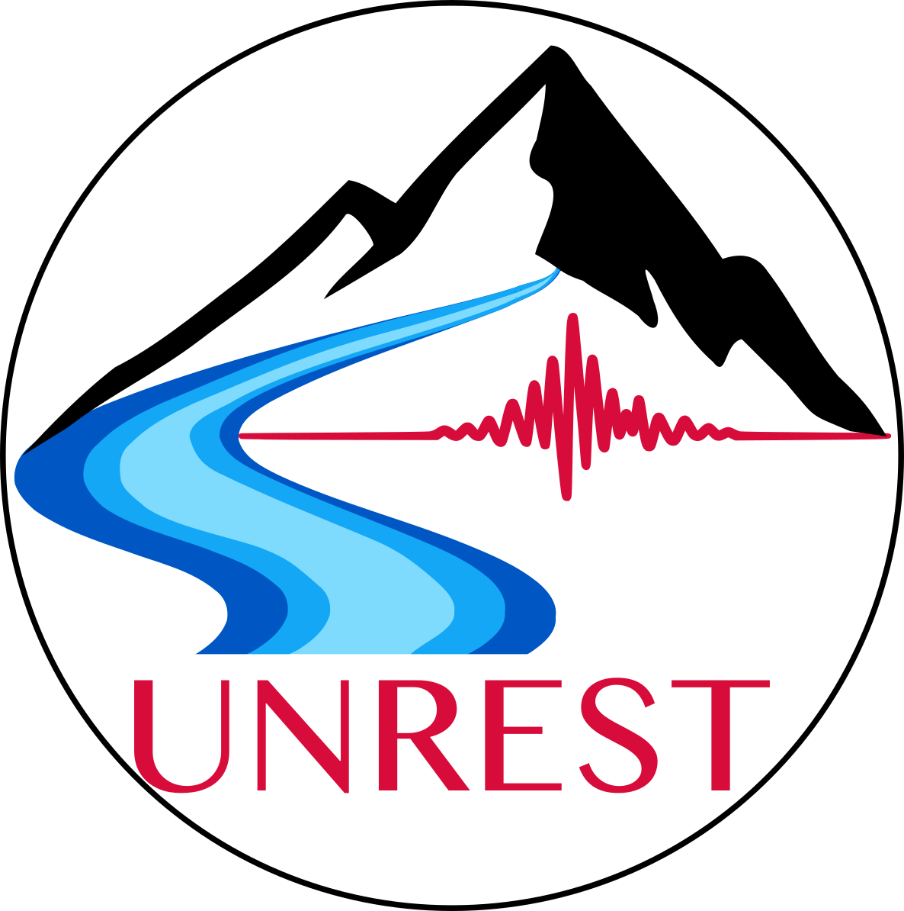

ERC St-G UNREST (2025-2030)

UNveiling dynamics of Rapid Erosion through advanced Seismic Techniques.
Floods and landslides are intensifying hazards, yet rapid erosion processes remain difficult to observe and predict. By developing a seismo–mechanico–hydrological approach, the UNREST project aims to monitor and anticipate these processes at high spatio-temporal resolution, providing new insight into the mechanisms that drive their transition to destructive events.
Project team
-
Bivas DAS — PhD student
Seismic characterization of active rockslides: from internal deformation to mass movement dynamics -
Odile DIB — PhD student
Monitoring flash flood dynamics across multiple scales using seismology -
Gabriela ARIAS — Postdoctoral researcher
Seismic interferometry-based monitoring of the Spitze Stei rockslide -
Sebastian OSORNO — Engineer
Distributed Acoustic Sensing of debris-flow activity -
Nicolas LEENHARDT — Engineer
AI-based detection of rapid surface processes